고정자산을 등록하면 상각 계획이 나오고, 감가상각은 전표를 먼저 보여 준 뒤 실행합니다. 결산할 때는 단계마다 전표를 확인합니다. 재무제표와 장부에는 같은 금액이 전기 금액과 나란히 나옵니다. 잠그면 그해의 기록은 바꿀 수 없습니다.
무엇을 · 왜#
장부와 재무제표는 따로 입력하지 않습니다. 원장의 이벤트로 만든 전표를 양식에 맞춰 보여 줍니다.
| 화면 | 메뉴 |
|---|---|
| 고정자산 등록, 처분 | 고정자산 → 고정자산 |
| 감가상각 실행 | 고정자산 → 감가상각 실행 |
| 결산 | 회계 → 결산 |
| 손익계산서, 재무상태표, 이익잉여금처분계산서 | 회계 |
| 매입매출장, 거래처 원장, 현금출납장, 일계표·월계표, 합계잔액시산표 | 회계 |
전문가 검수 전입니다
법령과 회계 기준을 확인해 만들었지만 회계·세무 전문가의 검수를 받지 않았습니다. 화면에도 그렇게 표시합니다. 신고와 공시의 책임은 회사에 있습니다.
먼저 알아 둘 것
- 가온가전은 가상 회사이고, 숫자는 모두 가상입니다. 두 해의 거래를 손으로 계산한 작은 회사입니다. 화면은 로컬 Supabase에서 찍었습니다.
- 녹화 전에 넣은 전표: 2024년 자본금 50,000,000(현금), 청구 5,000,000 + 세액 500,000(가온마트), 매출원가 3,000,000(현금). 2025년 청구 8,000,000 + 세액 800,000, 현금 입금 3,000,000, 매입 1,000,000 + 세액 100,000(동해상사).
- 노트북 자산(2,400,000, 2025-01-10)은 처분 단계 직전에 명령으로 넣었습니다.
- 2026년에 지난해(2025)를 결산하는 순서로 찍었습니다.
따라 하기#
- 고정자산 켜기. 관리자로 설정 → 모듈에서 고정자산의 켜기를 누릅니다. 켜기 전의 자산은 자동으로 등록되지 않는다고 알려 줍니다.
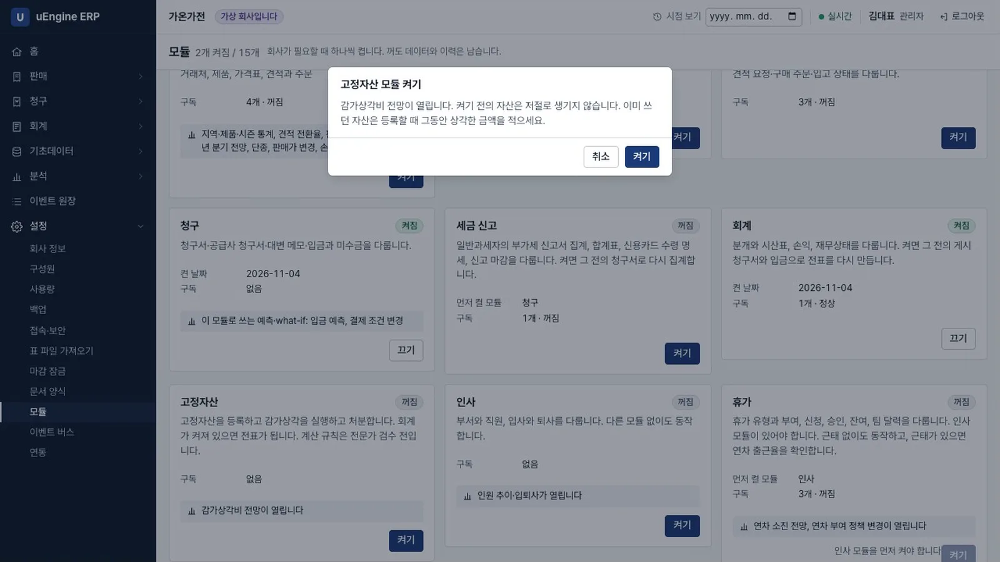
고정자산 켜기 - 자산 적기. 정회계로 로그인해 고정자산 → 고정자산 → 새로 만들기에서 자산명
복합기, 취득일2025-03-15, 취득가액12000000을 넣습니다. 내용연수에8을 적으면 비품의 세법상 내용연수 범위인 4~6년을 벗어났다고 경고합니다.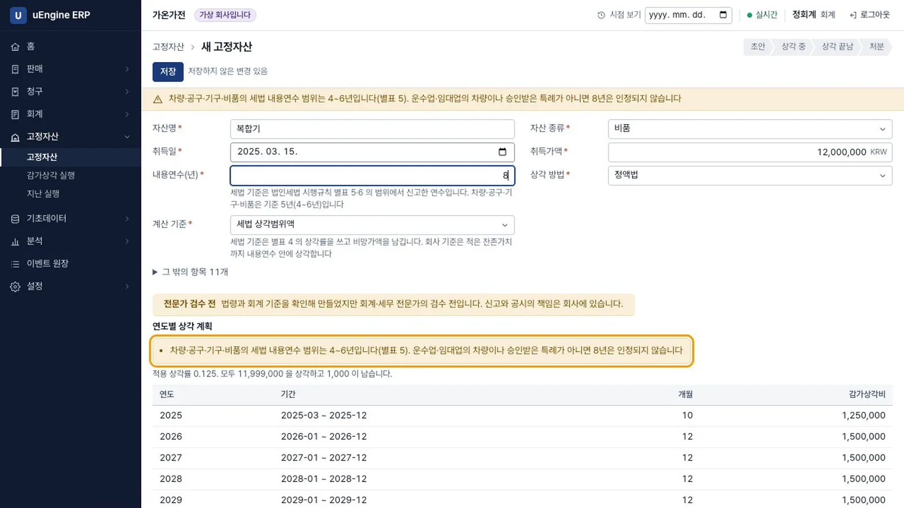
내용연수 경고 - 계획 보기. 내용연수를
5로 고칩니다. 첫해 2025년은 10개월 2,000,000, 2026년은 2,400,000, 마지막 2030년은 399,000입니다. 모두 11,999,000을 상각하고 1,000이 남습니다.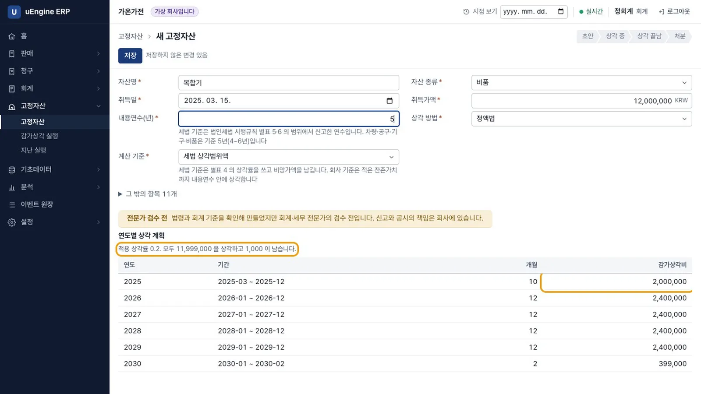
상각 계획 - 세법이 막는 것. 자산 종류를 건물로, 상각 방법을 정률법으로 고르면
세법 기준에서 건물과 구축물은 정액법만 쓸 수 있습니다라고 그 자리에서 막습니다. 자산 종류는 비품, 상각 방법은 정액법으로 되돌립니다.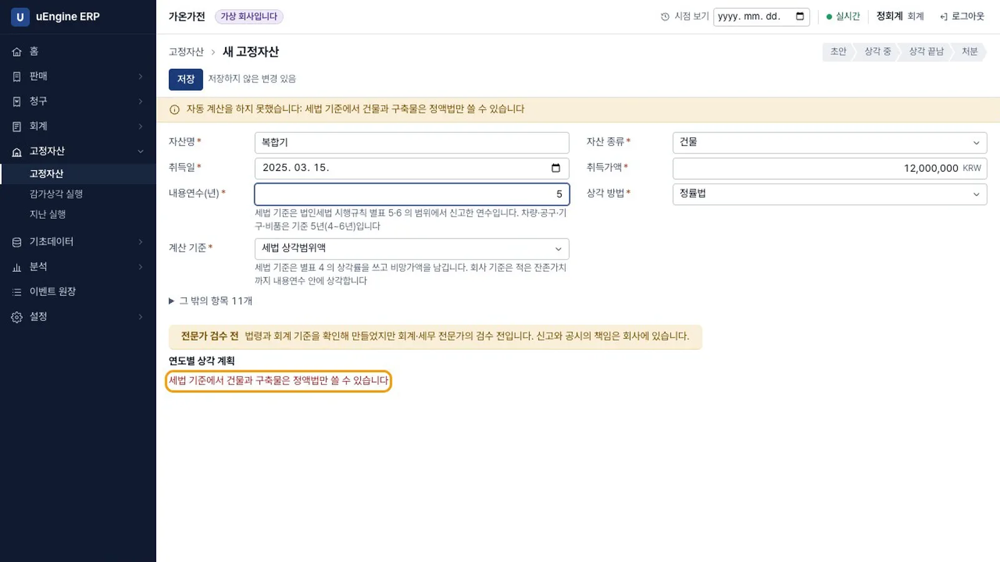
정액법 안내 - 등록. 그 밖의 항목에서 취득 대금 계정
현금을 고르고 저장한 뒤 등록을 누릅니다. 번호FA/2025/00001이 붙고 입력 칸이 사라집니다.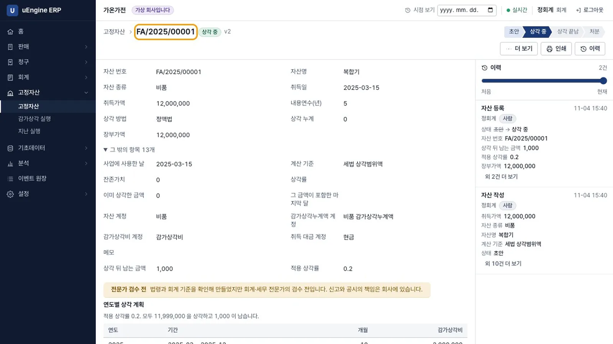
등록 - 한 달 실행. 고정자산 → 감가상각 실행에서
2025-03을 고릅니다. 실행 전에 금액 200,000과 전표(818 감가상각비, 213 비품 감가상각누계액)가 보입니다. 감가상각 실행을 누릅니다.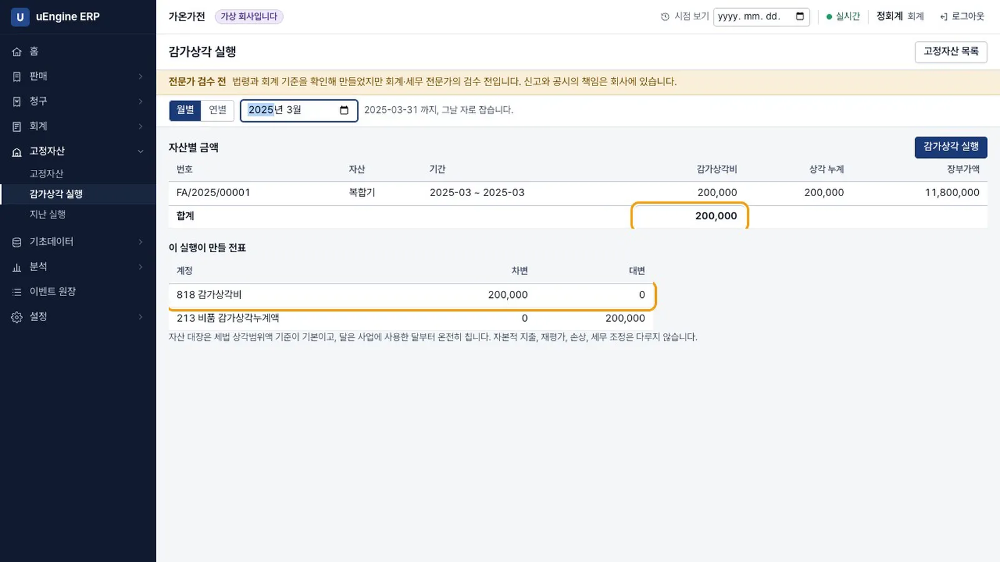
실행 미리 보기 - 연별 실행. 연별을 누르고
2025를 넣으면 남은 2025-04 ~ 2025-12의 1,800,000이 나옵니다. 실행합니다.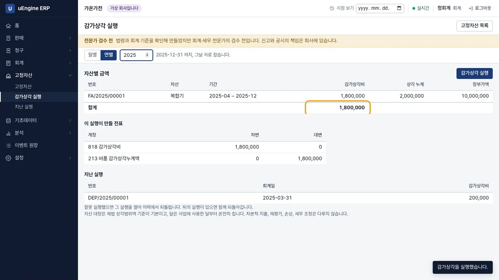
연별 실행 - 처분 미리 계산. 노트북 자산을 열어 처분에 처분일
2025-11-20, 대금3000000을 적습니다. 처분 전 상각 400,000, 장부가액 2,000,000, 처분 이익 1,000,000이 나옵니다. 이 장에서는 실행하지 않습니다.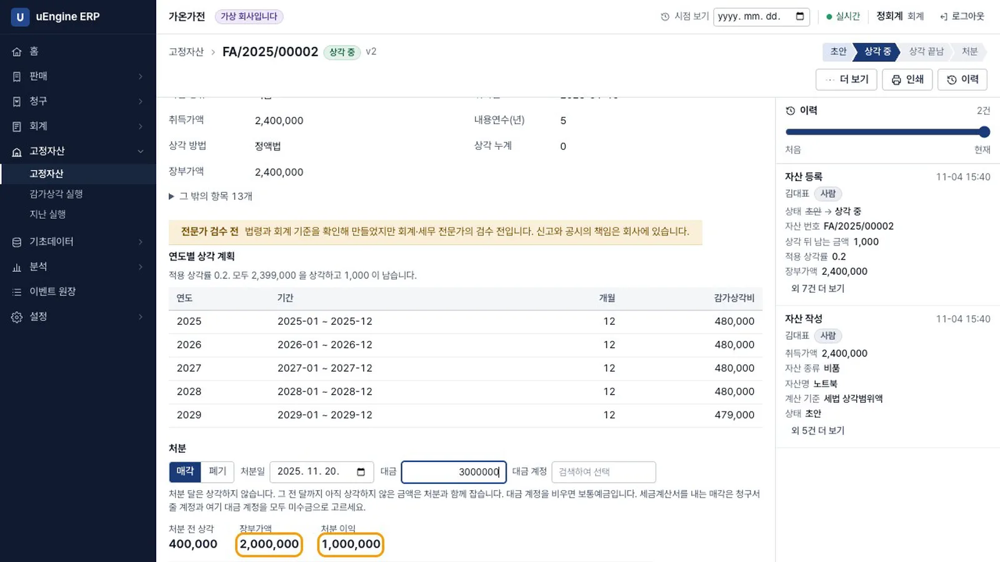
처분 미리 계산 - 결산 1단계. 회계 → 결산에 사업연도
2025를 넣습니다. 아직 반영하지 않은 노트북의 12개월 감가상각액 480,000이 나옵니다. 감가상각 실행을 누릅니다.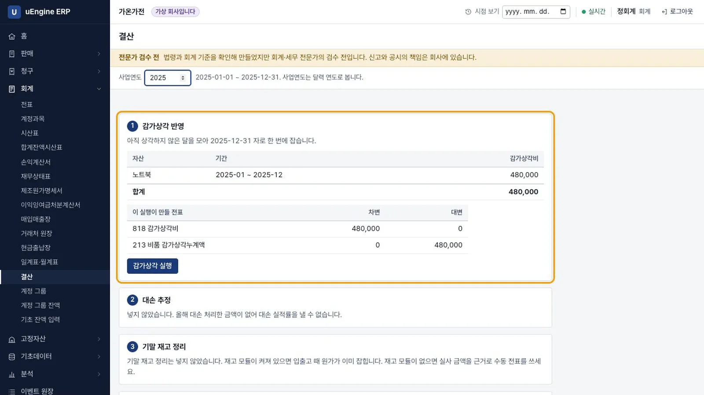
결산 1단계 - 넣지 않은 것. 2단계 대손 추정과 3단계 기말 재고 정리는 포함하지 않았다는 안내와 이유가 나옵니다.
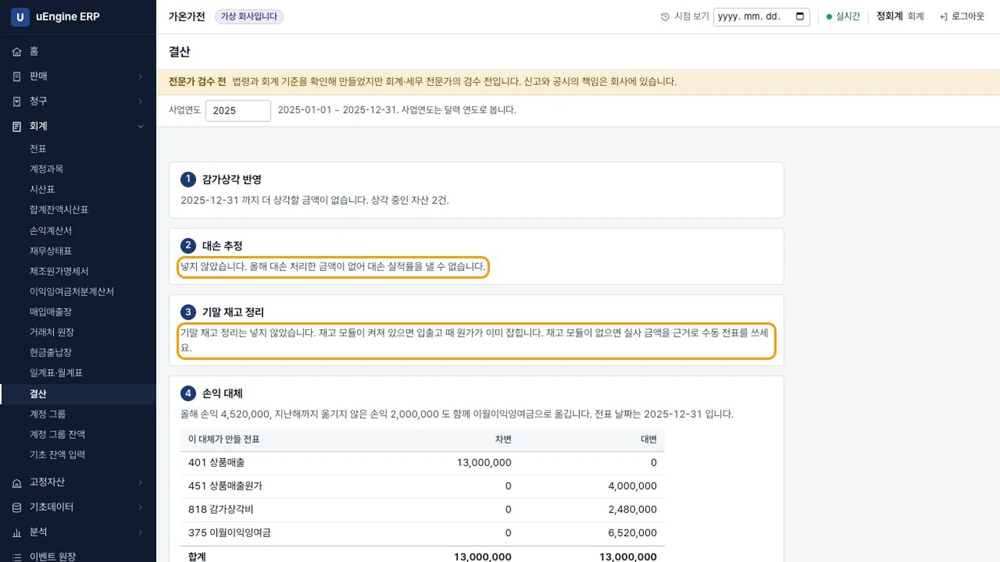
넣지 않은 것 - 손익 대체. 4단계에 2025년 손익 4,520,000과 그전까지 대체하지 않은 2,000,000이 나옵니다. 이월이익잉여금으로 6,520,000이 대체되고, 전표 합계는 13,000,000입니다. 실행하면
CLOSE/2025가 됩니다. 결산 취소로 되돌릴 수 있습니다.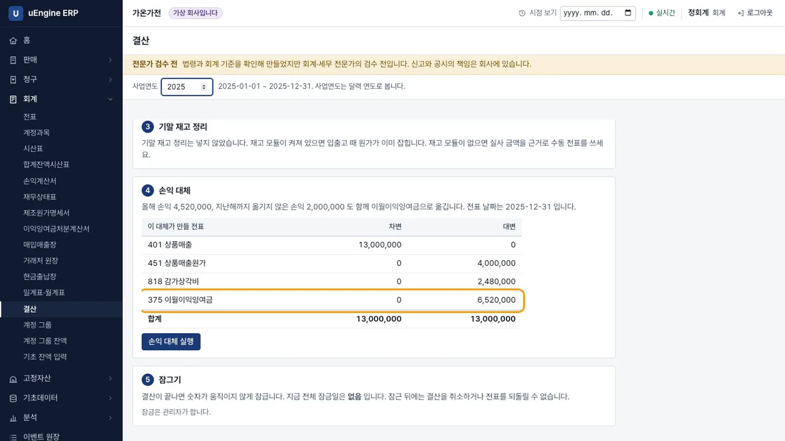
손익 대체 - 손익계산서. 회계 → 손익계산서에서 2025년을 고르면 양식의 각 칸에 당기와 전기 금액이 나란히 나옵니다. 매출액 8,000,000(전기 5,000,000), 영업이익 4,520,000(전기 2,000,000)입니다.
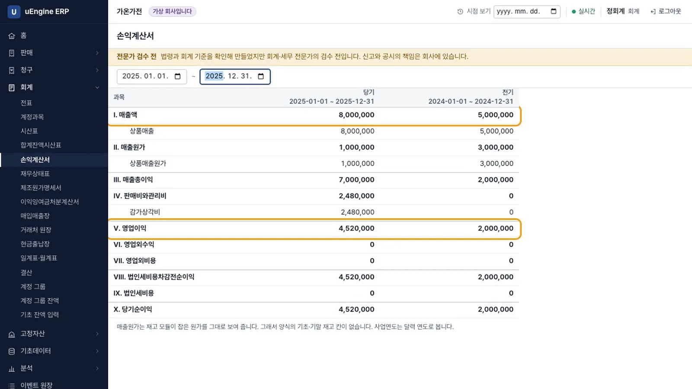
손익계산서 - 재무상태표. 2025-12-31의 자산 총계는 58,920,000(전기 52,500,000)입니다. 부채와 자본 합계도 58,920,000으로 맞습니다. 비품 감가상각누계액은 -2,480,000입니다.
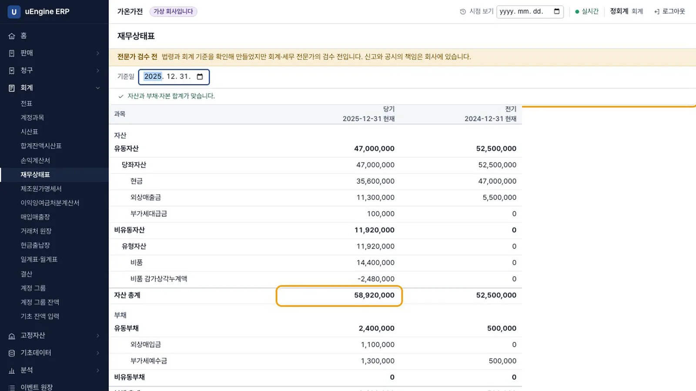
재무상태표 - 이익잉여금처분계산서. 전기이월 2,000,000, 당기순이익 4,520,000, 차기이월 6,520,000입니다.
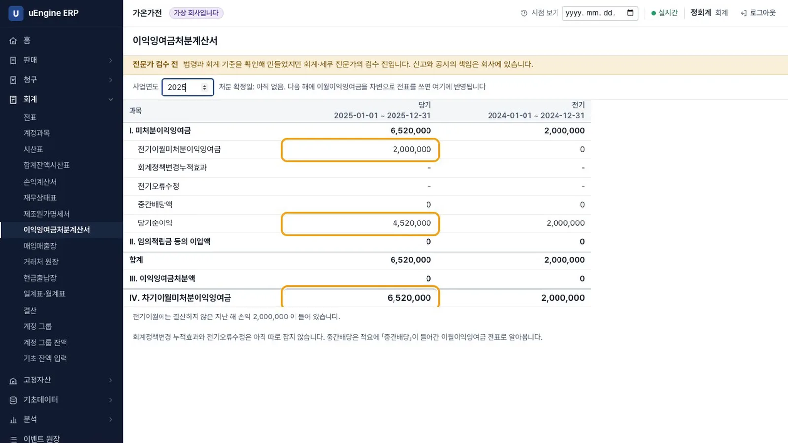
이익잉여금처분계산서 - 매입매출장과 거래처 원장. 매입매출장은 매출 8,000,000(전기 5,000,000), 매입 1,000,000입니다. 거래처 원장에서 가온마트는 이월 5,500,000, 잔액 11,300,000입니다. 줄을 누르면 전표 두 줄이 나옵니다.
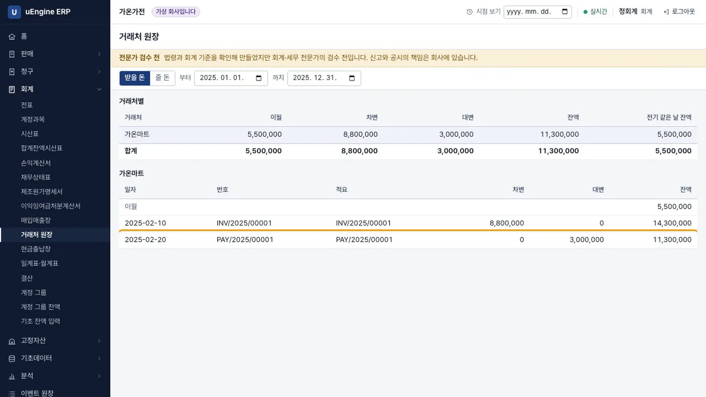
거래처 원장 - 현금출납장. 이월 47,000,000, 입금 3,000,000, 출금 14,400,000, 잔액 35,600,000입니다.
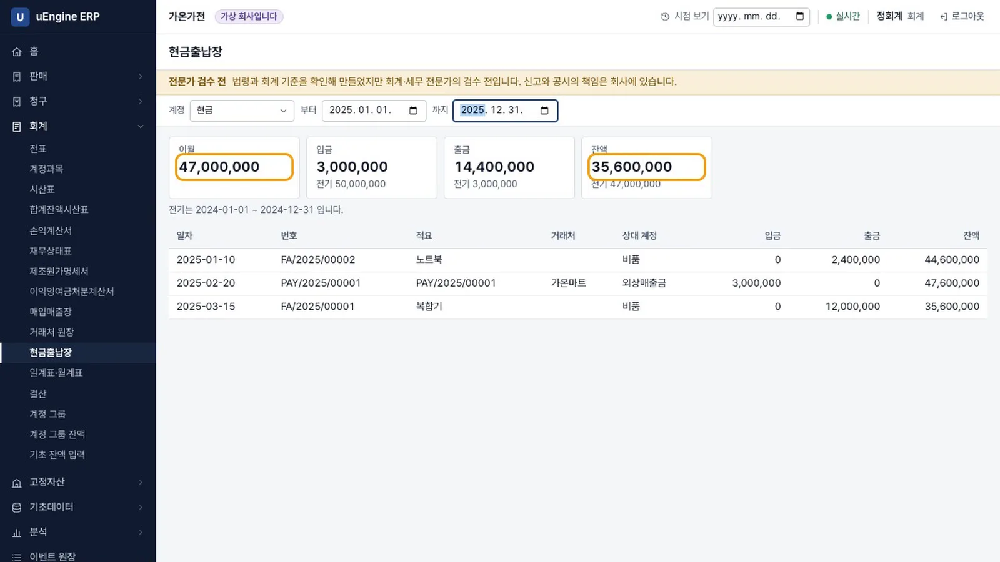
현금출납장 - 일계표와 월계표. 2025-02-20의 전일 잔액은 44,600,000, 다음날로 넘기는 잔액은 47,600,000입니다. 월계표의 2025-02 외상매출금은 차변 8,800,000, 대변 3,000,000입니다.
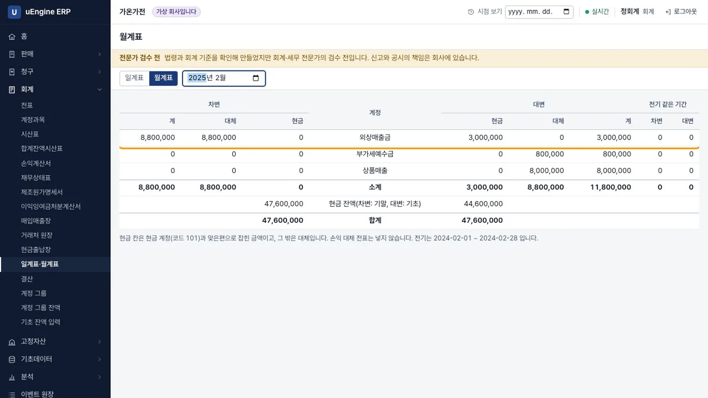
월계표 - 합계잔액시산표. 2025년의 차변 합계와 대변 합계가 82,280,000으로 맞습니다.
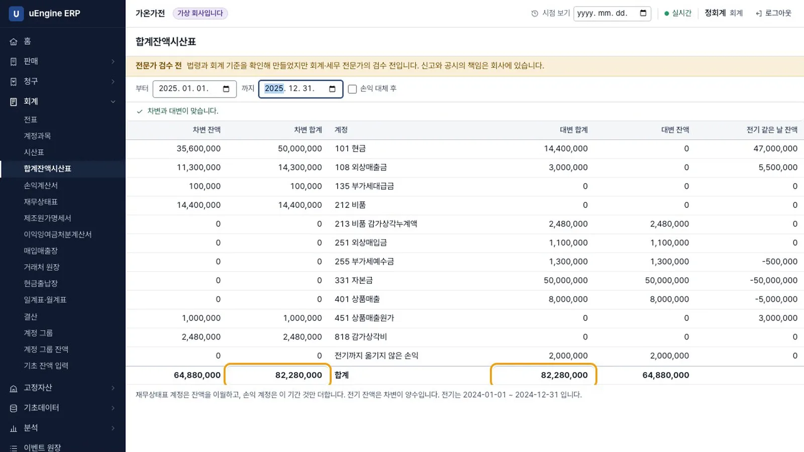
합계잔액시산표 - 잠그기. 관리자로 회계 → 결산의 5단계에서 2025-12-31 까지 잠그기를 누릅니다. 결산 취소가 꺼지고, 그 날짜까지의 감가상각도
전체 잠금일(2025-12-31) 안에 있어 바꿀 수 없습니다라고 막힙니다.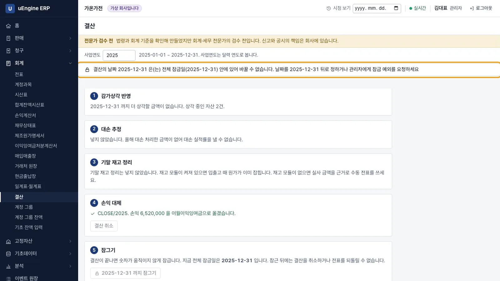
잠금
확인 문제#
건물을 정률법으로 고르면 왜 저장 전에 막히나요?
세법 기준에서 건물과 구축물은 정액법만 쓸 수 있기 때문입니다. 내용연수가 범위를 벗어나면 경고만 나오지만, 이 경우에는 계산할 수 없습니다.
결산 화면에 "넣지 않았습니다"라고 나오는 칸은 무엇인가요?
근거가 없어 앱이 분개를 만들지 않은 항목입니다. 이 회사는 대손 처리한 금액이 없어 대손 실적률을 낼 수 없고, 재고 모듈을 쓰지 않아 기말 재고는 실사 금액으로 수동 전표를 써야 합니다. 포함하지 못한 항목은 화면에 표시합니다.
잠근 뒤에 되돌리려면 어떻게 하나요?
결산 취소와 그 기간의 되돌리기, 감가상각 실행이 잠금일에 막힙니다. 화면은 날짜를 잠금일 뒤로 정하거나 관리자에게 잠금 예외를 요청하라고 안내합니다.